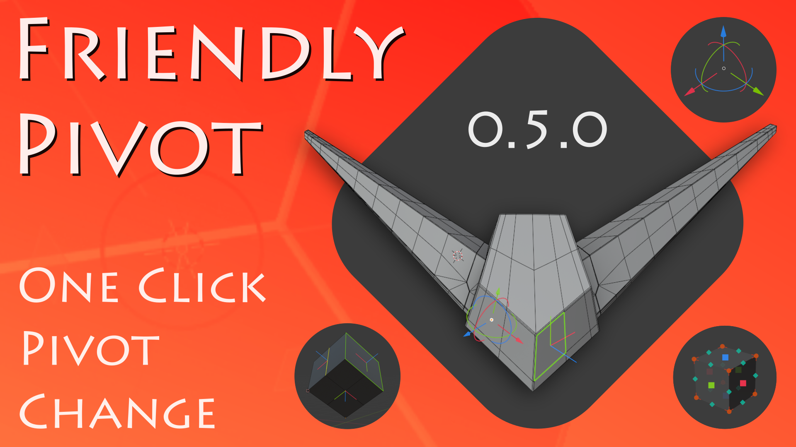
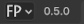

Friendly Pivot Addon Documentation

Friendly Pivot addon mimics most functionalities of Autodesk Maya Pivot Transform tool with minor differences, improvements and updates suitable for Blender. It's main task is to quickly and conveniently change the Pivot Orientation, Origin and 3D Cursor positions by pressing fewer keys, eliminating the need to select the desired component of a mesh, bone or curve point and long travel through different menus to change Blender pivot.
Just press D button, hover cursor mouse above highlighted component and click LMB, MMB or RMB to change pivot. Or use Pivot gizmo to move Origin in 3D space or set custom pivot orientation. Both are with incremental system.
In addition Bbox gizmo helps adjust Origin and 3D cursor selected object's boundaries.
It’s available on Gumroad Blender Market
Features
- Easy change Pivot orientations.
- Easy change Origin positions.
- Easy change 3D Cursor orientation and position.
Requirements
- Blender 4.2 or higher.
Latest version
The latest version of Friendly Pivot Addon is 0.5.0.
Installation
It's recommended to remove previously installed addon before the installation!
From "Get Extension" Preference tab
- Start Blender, then Edit → User Preferences → Get Extensions tab,
- Press 'Install from Disk' command in Extension settings dropdown menu (down-arrow icon located in upper right area of Get Extensions tab),
- Locate and select downloaded friendly_pivot zip file,
- Activate the addon, save user settings,
- Close preferences.
From "Add-ons" Preference tab
- Start Blender, then Edit → User Preferences → Add-ons tab,
- Press 'Install from Disk' command in Add-ons settings dropdown menu (down-arrow icon located in upper right area of Add-ons tab),
- Locate and select downloaded friendly_pivot zip file,
- Activate the addon, save user settings,
- Close preferences.
Quick usage
Select object, press D (default invoke key, changeable) or activate Friendly Pivot Tool in Blender toolbar then hover mouse cursor above necessary and highlighted component then:
* Press LMB to set new Pivot Transform Orientation or
* Press RMB to set new Origin position or
* Press MMB to set 3d Cursor orientation and position.
For more actions and modes see the addon's manual.
Contact
The addon is in BETA and works well but could be errors.
If there is an existed one, please report a bug by pressing Support button in dropdown menu(upper left FP icon)  while Friendly Pivot addon is active in main Blender viewport.